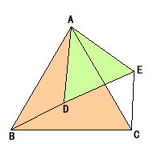

ProblemIn the right figure,triangle ABC and ADE are equilateral triangles.Find the triangle which is congruent with the triangle ACE . |
 |
How to use this applet1.Drag red point to change the size of ADE .2.Press "Define" button to go to next step . 3.Drag red point to rotate triangle ACE . 4.Press "Init" button to go to initial step . |